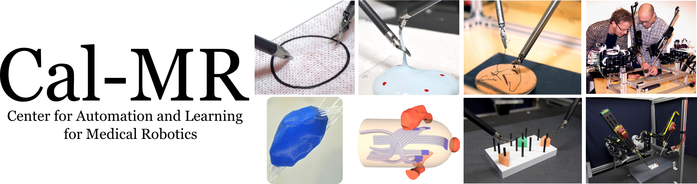

|  | |||||||
|
|||||||
Robot-Assisted SurgeryLearning by Observation for Surgical Subtasks: Multilateral Cutting of 3D Viscoelastic and 2D Orthotropic Tissue Phantoms Adithyavairavan Murali, Siddarth Sen, Ben Kehoe, Animesh Garg, Seth McFarland, Sachin Patil, W. Douglas Boyd, Susan Lim, Pieter Abbeel, Ken Goldberg. IEEE International Conference on Robotics and Automation. May. 2015. [pdf] Learning Accurate Kinematic Control of Cable-Driven Surgical Robots Using Data Cleaning and Gaussian Process Regression. Jeffrey Mahler, Sanjay Krishnan, Michael Laskey, Siddarth Sen, Adithyavairavan Murali, Ben Kehoe, Sachin Patil, Jiannan Wang, Mike Franklin, Pieter Abbeel, Ken Goldberg. IEEE International Conference on Automation Science and Engineering (CASE). Taipei, Taiwan. August 2014. [pdf] Autonomous Multilateral Debridement with the Raven Surgical Robot. Ben Kehoe, Gregory Kahn, Jeffrey Mahler, Jonathan Kim, Alex Lee, Anna Lee, Keisuke Nakagawa, Sachin Patil, W. Douglas Boyd, Pieter Abbeel, Ken Goldberg. IEEE International Conference on Robotics and Automation (ICRA), Hong Kong. June 2014. [pdf] Superhuman Performance of Surgical Tasks by Robots using Iterative Learning from Human-Guided Demonstrations. Jur van den Berg, Stephen Miller, Daniel Duckworth, Humphrey Hu, Andrew Wan, Xiao-Yu Fu, Ken Goldberg, Pieter Abbeel. IEEE International Conference on Robotics and Automation (ICRA). Anchorage, AL. May 2010. Recipient of Best Medical Robotics Paper Award. [pdf] Surgical Retraction of Non-Uniform Deformable Layers of Tissue: 2D Robot Grasping and Path Planning. Rik Jansen, Kris Hauser, Nuttapong Chentanez, Frank van der Stappen, Ken Goldberg. IEEE International Conference on Intelligent Robots and Systems (IROS). St Louis, Oct 2009. [pdf] |
|||||||
Radiation OncologyPlanning Curvature and Torsion Constrained Ribbons in 3D with Application to Intracavitary Brachytherapy. Sachin Patil, Jia Pan, Pieter Abbeel, Ken Goldberg. Workshop on Algorithmic Foundations of Robotics (WAFR). Istanbul, Turkey. August 2014. [pdf] Exact Reachability Analysis for Planning Skew-Line Needle Arrangements for Automated Brachytherapy. Animesh Garg, Timmy Siauw, Guang Yang, Sachin Patil, J. Adam M. Cunha, I-Chow Hsu, Jean Pouliot, Alper Atamturk, Ken Goldberg. IEEE Interntional Conference on Automation Science and Engineering (CASE). Taipei, Taiwan. August 2014. [pdf] Motion Planning with Sequential Convex Optimization and Convex Collision Checking. John Schulman, Yan Duan, Jonathan Ho, Alex Lee, Ibrahim Awwal, Henry Bradlow, Jia Pan, Sachin Patil, Ken Goldberg and Pieter Abbeel. International Journal of Robotics Research (IJRR). Vol. 33(7), June 2014. [pdf] Planning Locally Optimal, Curvature-Constrained Trajectories in 3D. using Sequential Convex Optimization. Yan Duan, Sachin Patil, John Schulman, Ken Goldberg, Pieter Abbeel IEEE International Conference on Robotics and Automation (ICRA), Hong Kong. June 2014. [pdf] Needle Steering in 3D via Rapid Replanning Sachin Patil, Jessica Burgner, Robert J. Webster III, Ron Alterovitz. IEEE Transactions on Robotics (T-RO). 2014. [pdf] Needle Path Planning and Steering in a Three-Dimensional Non-Static Environment using Two-Dimensional Ultrasound Images Gustaaf Vrooijink, Momen Abayazid, Sachin Patil, Ron Alterovitz, Sarthak Misra. International Journal of Robotics Research (IJRR), 2014. [pdf] An Algorithm for Computing Customized 3D Printed Implants with Curvature Constrained Channels for Enhancing Intracavitary Brachytherapy Radiation Delivery. Animesh Garg, Sachin Patil, Timmy Siauw, J. Adam M. Cunha, I-Chow Hsu, Pieter Abbeel, Jean Pouliot, and Ken Goldberg. IEEE International Conference on Automation Science and Engineering (CASE), Madison, WI, August 2013. [pdf] Material Evaluation of PC-ISO for Customized, 3D Printed, Gynecologic 192Ir HDR Brachytherapy Applicators. Katherine Mellis, Timmy Siauw, Atchar Sudhyadhom, Rajni Sethi, I-Chow Hsu, Jean Pouliot, Animesh Garg, Ken Goldberg, J. Adam Cunha. Conditionally Accepted: Journal of Applied Clinical Medical Physics (JACMP). [pdf] Robot-Guided Open-Loop Insertion of Skew-Line Needle Arrangements for High Dose Rate Brachytherapy. Animesh Garg, Timmy Siauw, Dmitry Berenson, J.Adam M. Cunha, I-Chow Joe Hsu, Jean Pouliot, Dan Stoianovici, Ken Goldberg. IEEE Transactions on Automation Science and Engineering (T-ASE). V10(4), Oct 2013. pp. 948-956. [pdf] Initial Experiments toward Automated Robotic Implantation of Skew-Line Needle Arrangements for HDR Brachytherapy. Animesh Garg, Timmy Siauw, Dmitry Berenson, Adam Cunha, I-Chow Hsu, Jean Pouliot, Dan Stoianovici, and Ken Goldberg. IEEE International Conference on Automation Science and Engineering (CASE), Seoul, Korea. August, 2012. Recipient of Best Applications Paper Award. [pdf] NPIP: A Skew-Line Needle Configuration Optimization System for HDR Brachytherapy. Timmy Siauw, Adam Cunha, Dmitry Berenson, Alper Atamturk, I-Chow Joe Hsu, Ken Goldberg, Jean Pouliot. Medical Physics, 39, 4339. July 2012. [pdf] Robot-Assisted Needle Steering. Kyle B. Reed, Ann Majewicz, Vinutha Kallem, Ron Alterovitz, Ken Goldberg, Noah J. Cowan, and Allison M. Okamura. IEEE Robotics and Automation Magazine (RAM). V18:4, pp 35-46. December 2011. [pdf] IPIP: A New Approach to Inverse Planning for HDR Brachytherapy by Directly Optimizing Dosimetric Indices. Timmy Siauw, J. Adam M. Cunha, Alper Atamturk, I-Chow Hsu, Jean Pouliot, and Ken Goldberg. Medical Physics. Vol. 38 (7). July 2011. [pdf] LQG-Based Planning, Sensing, and Control of Steerable Needles. Jur van den Berg, Sachin Patil, Ron Alterovitz, Pieter Abbeel, Ken Goldberg. Ninth Workshop on Algorithmic Foundations of Robotics (WAFR). Singapore. December 2010. [pdf] LQG-MP: Optimized Path Planning for Robots with Motion Uncertainty and Imperfect State Information. Jur van den Berg, Pieter Abbeel, Ken Goldberg. International Journal of Robotics Research. Vol. 30 (6). June 2011. [pdf] LQG-MP: Optimized Path Planning for Robots with Motion Uncertainty and Imperfect State Information. Jur van den Berg, Pieter Abbeel, Ken Goldberg. Robotics: Science and Systems (RSS). Zaragosa, Spain. June 2010. (see extended journal version above). [pdf] Three-dimensional Motion Planning Algorithms for Steerable Needles Using Inverse Kinematics. Vincent Duindam, Jijie Xu, Ron Alterovitz, Shankar Sastry, Ken Goldberg. International Journal of Robotics Research. October 2009. [pdf] Planning "Fireworks" Trajectories for Steerable Needles to Reduce Patient Trauma. Jijie Xu, Vincent Duindam, Ron Alterovitz, Adam Cunha, Jean Pouliot, I-Chow Joe Hsu, Ken Goldberg. IEEE International Conference on Intelligent Robots and Systems (IROS). St Louis, Oct 2009. [pdf] Interactive Simulation of Surgical Needle Insertion and Steering. Nuttapong Chentanez, Ron Alterovitz, Daniel Ritchie, Lita Cho, Kris Hauser, Ken Goldberg, Jonathan Shewchuk, James O'Brien. Proceedings of ACM SIGGRAPH, Annual Conference Series. (New Orleans, Louisiana), Aug. 2009. [pdf, videos] Feedback Control for Steering Needles Through 3D Deformable Tissue Using Helical Paths. Kris Hauser, Ron Alterovitz, Nuttapong Chentanez Allison Okamura, and Ken Goldberg. Robots: Science and Systems (RSS). Seattle, WA, June 2009. [pdf] Guiding Medical Needles Using Single-Point Tissue Manipulation, Meysam Torabi, Kris Hauser, Ron Alterovitz, Vincent Duindam, and Ken Goldberg. IEEE International Conference on Robotics and Automation (ICRA). Kobe, Japan, May, 2009. Best Medical Robotics Paper Award Finalist. [pdf] 3D Motion Planning Algorithms for Steerable Needles Using Inverse Kinematics. Vincent Duindam, Jijie Xu, Ron Alterovitz, Shankar Sastry, and Ken Goldberg. Eighth International Workshop on Algorithmic Foundations of Robotics (WAFR), Guanajuato, Mexico, December, 2008. [pdf] Motion Planning Under Uncertainty for Image-Guided Medical Needle Steering. Ron Alterovitz, Michael Branicky, Ken Goldberg. International Journal of Robotics Research. 27:1361-1374, Nov, 2008. [pdf] Sensorless Motion Planning for Medical Needle Insertion in Deformable Tissue. Ron Alterovitz, Ken Goldberg, Jean Pouliot, and I-Chow Hsu. IEEE Transactions on Information Technology in Biomedicine. Vol. 13(2), 217-225. March 2009. [pdf] Motion Planning For Steerable Needles in 3D Environments with Obstacles Using Rapidly-Exploring Random Trees and Backchaining. Jijie Xu, Vincent Duindam, Ron Alterovitz, and Ken Goldberg. IEEE Conference on Automation Science and Engineering (CASE). August 2008. [pdf] Screw-Based Motion Planning for Bevel-Tip Flexible Needles in 3D Environments with Obstacles, Vincent Duindam, Ron Alterovitz, Shankar Sastry, and Ken Goldberg. IEEE International Conference on Robotics and Automation (ICRA). May 2008. [pdf] The Stochastic Motion Roadmap: A Sampling Framework for Planning with Markov Motion Uncertainty, Ron Alterovitz, Thierry Simeon, and Ken Goldberg. Robotics Science and Systems (RSS). June 2007, Atlanta, GA. [pdf] Optimization of HDR Brachytherapy Dose Distributions using Linear Programming with Penalty Costs. Ron Alterovitz, Etienne Lessard, Jean Pouliot, I-Chow Joe Hsu, James F. O'Brien, and Ken Goldberg. Medical Physics Journal. vol. 33, no. 11, pp. 4012-4019, Nov. 2006. [pdf] Registration of MR prostate images with biomechanical modeling and nonlinear parameter estimation. Ron Alterovitz, Ken Goldberg, Jean Pouliot, I-Chow Joe Hsu, Yongbok Kim, Susan Moyher Noworolski, and John Kurhanewicz. Medical Physics Journal, vol. 33(2), pp. 446-454, February 2006. [pdf] Steering Flexible Needles Under Markov Motion Uncertainty, Ron Alterovitz and Andrew Lim and Ken Goldberg and Gregory S. Chirikjian and Allison M. Okamura, IEEE International Conference on Intelligent Robotics and Systems (IROS), August 2005. [pdf] Planning for Steerable Bevel-tip Needle Insertion through 2D Soft Tissue with Obstacles, Ron Alterovitz, Ken Goldberg, and Allison Okamura, IEEE International Conference on Robotics and Automation (ICRA), April 2005. [pdf] Sensorless Planning for Medical Needle Insertion Procedures, Ron Alterovitz, Ken Goldberg, Jean Pouliot, Richard Taschereau, and I-Chow Hsu, IEEE/RSJ International Conference on Robots and Systems, October 2003. [pdf] |
|||||||
| Cal-MR | 1169 Etcheverry Hall | Berkeley, CA |